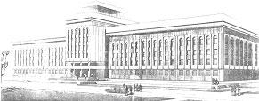

|

|
Идея создания в Гомеле политехнического вуза принадлежит бывшему директору завода «Гомсельмаш» Ивану Прокофьевичу Котенку. Именно его инициатива, поддержанная местными органами власти и Министерством высшего и среднего специального образования, явилась тем импульсом, который привел к открытию общетехнического факультета Белорусского ордена Трудового Красного Знамени политехнического института (БПИ) при заводе «Гомсельмаш».
Первые 200 студентов вечерней формы обучения приступили к занятиям 1 октября 1968 года. Подготовка велась по трем специальностям: технология машиностроения, металлорежущие станки и инструменты; машины и технология обработки металлов давлением; машины и технология литейного производства. Первым деканом Гомельского общетехнического факультета БПИ был назначен кандидат технических наук Роман Алексеевич Рутто.
Рождение вуза тесно связано с деятельностью большого числа талантливых инженеров, организаторов науки, производства, высшей школы Беларуси: В.А. Белого, П.И. Ящерицына, Н.М. Мешкова, Ф.Н. Капуцкого, В.Е. Старжинского, Р.А. Рутто, В.Н. Старикова, В.П. Ставрова, А.С. Шагиняна, С.Б. Сарело.
Шли годы, и на базе общетехнического факультета в январе 1973 года был открыт Гомельский филиал БПИ. В этом же году состоялся первый выпуск студентов вечернего отделения филиала.
В 1981 году в связи с возрастающей ролью Гомельского филиала БПИ не только для завода «Гомсельмаш», но и для активно развивающейся промышленности всего региона он был преобразован в Гомельский политехнический институт (ГПИ). Первым ректором института был доктор технических наук, профессор Василий Петрович Ставров. В институте было создано пять факультетов: машиностроительный, энергетический, механико-технологический, автоматизации и управления, вечерний факультет.
В 1986 году институт возглавил доктор технических наук Альберт Семенович Шагинян. За время его работы в университете построены: учебный корпус № 1, лабораторный корпус тяжелого оборудования (ЛКТО), общежитие № 2, жилой дом для профессорско-преподавательского состава; начато строительство санатория-профилактория для студентов.
В 1995 году Постановлением Кабинета Министров Республики Беларусь институту присвоено имя Павла Осиповича Сухого, выдающегося авиаконструктора.
В начале 90-х ГПИ становится престижным, быстро растущим вузом Гомельского региона. К этому времени построен новый главный корпус института, освоена вторая половина корпуса № 2, ведется работа по благоустройству территорий института.
С 1 июля 1998 года Гомельский политехнический институт имени П.О.Сухого был преобразован в Гомельский государственный технический университет имени П.О.Сухого.
В 2001 году ректором университета стал Станислав Брониславович Сарело, кандидат технических наук, доцент, академик Белорусской инженерной академии, член-корреспондент Международной инженерной академии. В 2003 году вступил в строй один из лучших в Беларуси санаторий-профилакторий для студентов. На базе университета создан и функционирует Гомельский региональный центр тестирования и профессиональной ориентации учащейся молодежи, который является представителем Республиканского института контроля знаний в Гомельской области и координирует работу всех заинтересованных организаций в подготовке и проведении централизованного и репетиционного тестирования в регионе, активно сотрудничает с областным управлением образования по вопросам профессиональной ориентации абитуриентов.
С 2007 года университетом руководит доктор физико-математических наук, профессор Сергей Иванович Тимошин.
В 2012 году университет получил статус научной организации.
Университет является одним из ведущих технических вузов Республики Беларусь и осуществляет подготовку инженерных кадров и кадров высшей научной квалификации для таких отраслей как машиностроение, металлургия, энергетика, экономика, радиоэлектроника и информационные технологии. В соответствии со специальным разрешением (лицензией) на право образовательной деятельности, выданным Министерства образования Республики Беларусь, университет ведёт подготовку по 21 специальности первой степени высшего образования, 6 специальностям второй ступени высшего образования (магистратуре), 9 специальностям аспирантуры, 11 специальностям переподготовки кадров с высшим образованием, а также осуществляется довузовская подготовка учащихся средних и средних специальных учебных заведений.
В университете работают и получают образовательные услуги около 7000 человек, функционируют 6 факультетов: энергетический, машиностроительный, механико-технологический, факультет автоматизированных и информационных систем, гуманитарно-экономический и заочный факультет. В 2011 году на базе факультета повышения квалификации и переподготовки кадров создан институт повышения квалификации и переподготовки кадров.
На 30 кафедрах университета работают около 400 высококвалифицированных преподавателей, в том числе около 160 с учеными степенями и званиями. Функционирует специализированный совет по защите диссертаций по двум специальностям. За время существования вуза подготовлено более 20000 специалистов с высшим образованием, около 100 кандидатов и докторов наук. В настоящее время университет имеет 3 учебных корпуса и лабораторный корпус тяжелого оборудования, 3 благоустроенных студенческих общежития.
Медицинское обслуживание студентов осуществляют два здравпункта, оснащенные необходимым медицинским оборудованием. Питание студентов и сотрудников обеспечивают 2 кафе (140 мест) и буфет, имеются 2 буфета в общежитиях. Спортивная база университета представлена игровым и тренажерным залами, открытыми спортивными площадки и гимнастическим городком.
Библиотека университета насчитывает более 535 тыс. экз. литературы, осуществляется подписка на научные журналы. Электронный каталог библиотеки, электронная библиотека и другие базы данных доступны пользователям как из локальной вычислительной сети университета так из через Интернет. Библиотека обеспечивает также доступ посетителям к Интернет-ресурсам и полнотекстовым базам данных учебных и научных изданий.
Университет располагает собственным издательским центром, обеспечивающим выпуск учебной, научной, научно-популярной, производственно-практической и справочной литературы; производство бланочной и иной полиграфической продукции; розничную торговлю книжно-журнальной продукцией и канцелярскими товарами. Издается научно-практический журнал «Вестник ГГТУ им. П.О.Сухого», входящий в перечень изданий ВАК Республики Беларусь для опубликования диссертационных исследований по техническим наукам. Издается общеуниверситетская газета «Сушка», в которой публикуются материалы, освещающие жизнь университета и его структурных подразделений.
Университет участвует в выполнении республиканских и межвузовских научно-технических программ, активно сотрудничает в области образования и науки с Центром теоретической физики им. Абдуса Салама (г. Триест, Италия), Триестским и Падуанским университетами, Объединенным институтом ядерных исследований (г. Дубна), Институтом низких температур и структурных исследований Польской академии наук (г. Вроцлав), Национальным техническим университетом Украины «Киевский политехнический институт» и рядом других зарубежных учреждений и учебных заведений.
Один раз в два года университет проводит международную научно-техническую конференцию «Современные проблемы машиноведения — научные чтения, посвященные памяти П.О.Сухого» и научно-методическую конференцию «Проблемы современного образования в техническом ВУЗе», кроме того периодически проводятся международные конференции «Менталитет славян», «Стратегия и тактика развития производственно-хозяйственных систем» и другие.
|
|
|